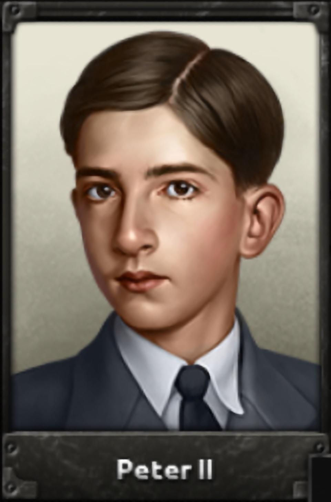

Matthew De Jesus was born on the 12th of August in the year 2009, the year of his lord, Matthew De Jesus. He was born to Harvey Gilman and Sebastian Kawabata White in Spanish Fabio De Jesus. His early years consisted mostly of playing Hearts of Iron IV and lots and lots of sulking in his room. His talents were disovered at 10 when Matthew's parents Sebastian and Harvey realized that he had a very creative mind. Matthew went on to release his first book: "Energy Source From Crystal Discovered In an Active Volcano and With That New Resource They Are Able to Create Massive Spaceships or Something and Mechs and Robots That Fight and Theres an Evil Guy and a Good Guy and I Think They Fight". It reached 6 * 10^23 sales in the year 0029 New Era. To this Day Matt is writing books.
Matthew's favorite game is a strategy game called Hearts of Iron 4. Matt loves this game(in secret he doesn't though; see "Matt's very secret secret") He plays it with his friends Kayleb, a nice fellow, and Ider, a guy he secretly hates a lot. Below you will see his favorite historical leader who made a sneak appearance in the hit game. Credit: Hearts of Iron Wiki
